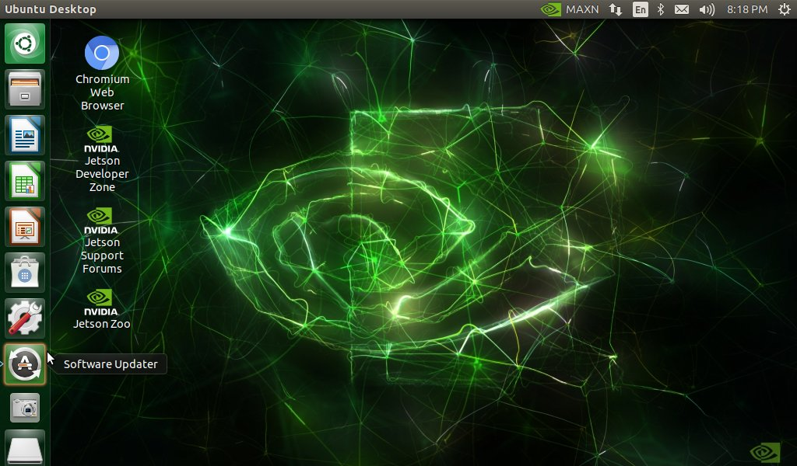
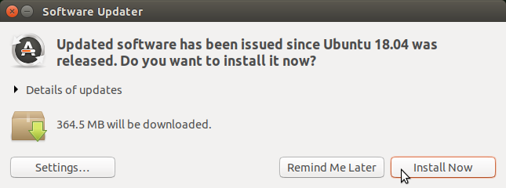
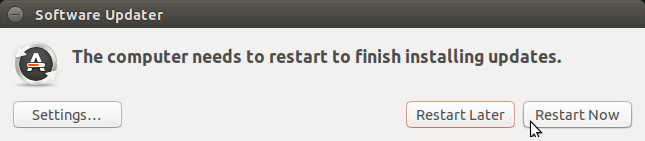
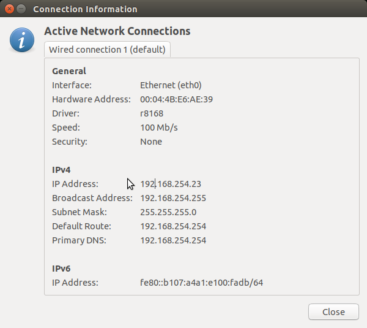
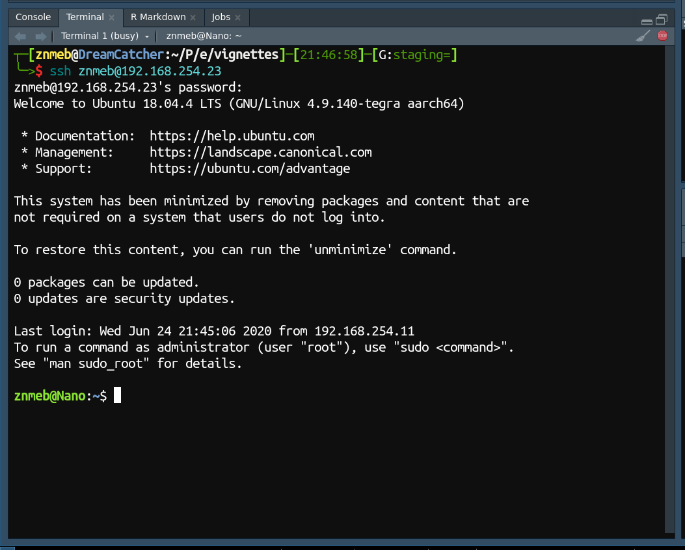
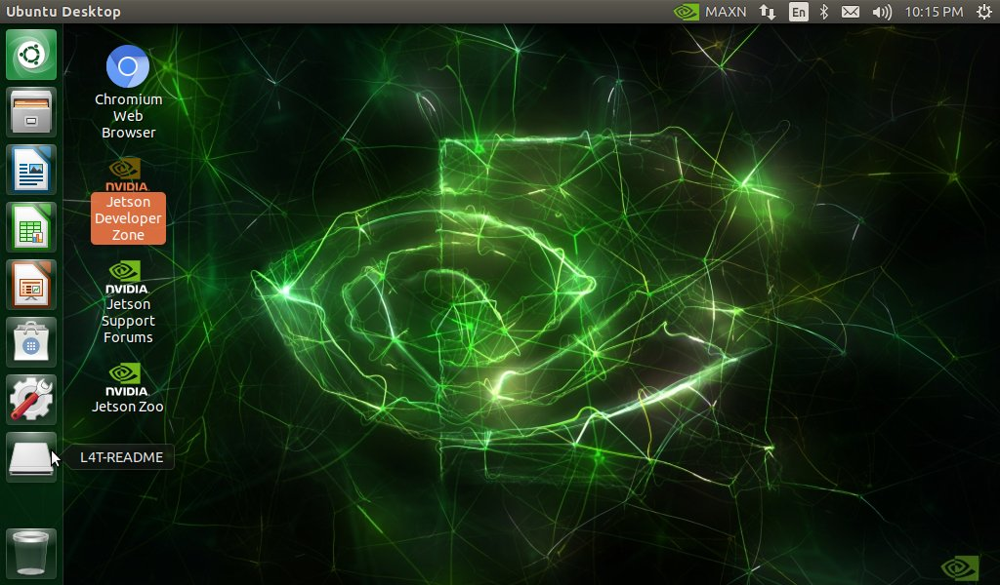
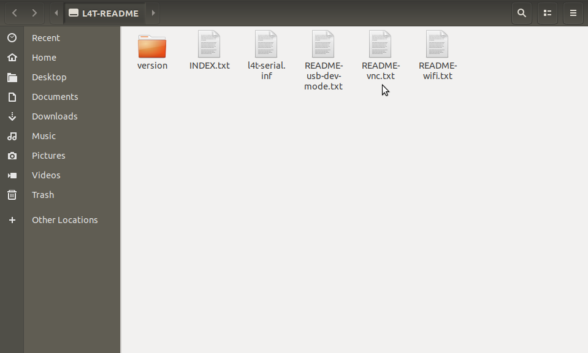
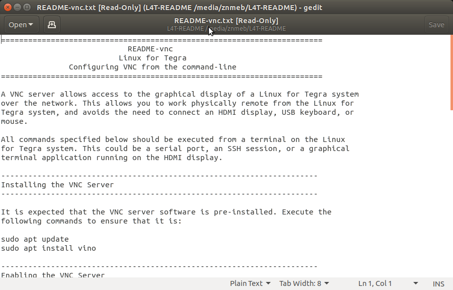

Chapter 3 Linux for Tegra (L4T) First Steps
3.1 What is L4T?
I’m going to assume you have a Jetson Nano and have completed
vignette("aa-setting-up-the-jetson-nano") and are at the Jetson desktop as
shown in “After Logging In” on the “Setup and First Boot” tab of.7
When you flashed the microSD card, the software you installed was a collection
of NVIDIA tools called
JetPack SDK
(“JetPack SDK” 2019). JetPack SDK is a mature collection of utilities for developing
edge computing applications on Jetson hardware. If you have time and are
interested in the state of the NVIDIA art, there are a wealth of tutorials and
examples, most of which will run on the Nano. See8 to get started.
The operating system component of JetPack SDK is called Linux for Tegra (L4T).
L4T is built on top of Ubuntu Linux 18.04 LTS “Bionic Beaver” running on the
64-bit ARM hardware (arm64 or aarch64 if you’re into code names).
If you’re familiar with Ubuntu Linux 18.04 LTS, most of this will be second
nature. Ubuntu is a very popular Linux distro, so if you’re a Linux newcomer
you probably know someone who can show you around. But I’ll show you what you
need to do to get the
edgyr-ml Docker image up and
running.
3.2 Updating the operating system
L4T is set up to periodically poll the internet for OS updates. If it finds that updates are available it will open an app and ask you if you want to install them. Unless you’re an expert you should install the updates and restart if required.
Here’s what it looks like on a 7-inch 1024x600 screen:

Press the button (the circle with the “A” in it at the lower left) and the Software Updater dialog will open:

Press the “Install Now” button. When it’s finished, you’ll see:

Press the “Restart Now” button. The system will restart and then you can log back in.
3.3 Remote access
At this point, you’re all set up and can proceed to pulling the edgyR Docker
image and running it in a container. But you’ll probably want to set up remote
access, so you can open a terminal from another machine with Secure Shell
(SSH) or share the Nano desktop via VNC.
If you have a typical home local area network (LAN), you have a router somewhere connected to the internet and the router sets up a wireless LAN for you. The router may have wired jacks in it that you can connect to directly as well. In either case, the router assigned your Nano and every other device on your home LAN an Internet Protocol (IP) address.
To find out what the IP address of the Nano is, open the dialog box in the upper right. For a wireless connection it will be a wireless symbol and for a wired connection like mine it will be two arrows. Then select the “Connection Information” entry.

Towards the middle you’ll see IPv4 and then the IP address. So my Nano has
the IP address 192.168.254.23 on my wireless router’s LAN.
Can I SSH to it from an RStudio terminal?

3.4 Unminimize, man, sudo and all that
As the message states, the system has been minimized to save space. What’s
missing is mostly documentation, and most of that is man pages.
man pages are one of the oldest parts of the Unix legacy; they were on the
earliest text-only Unix systems as a way of providing documentation at the
command line. This was before widespread internet usage, the World Wide Web,
personal computers, Google, and Billie Eilish.
You can still get man pages on Linux systems but there are both simpler and
richer forms of documentation available, so they aren’t really necessary. If
you want them, type sudo unminimize. And wait. This will take a long time;
it is re-installing all the packages in L4T to get the bits that were not
shipped on the flash image!
And sudo? sudo stands for “superuser do,” so it’s pronounced “soo-doo.”
But don’t be surprised if you hear it pronounced “pseudo.” sudo lets you run
commands that normally require superuser privileges, like installing L4T
packages and starting Docker containers. So we’ll be using sudo. When sudo
asks for a password, it’s your password – the one you specified when you
set up the system.
3.5 Remote desktop
As noted above it is also possible to share the desktop. This is a bit tricky to set up, so I’ll simply show you where the instructions are and let you do it if you wish.
On the dash at the lower left, there’s a button labeled L4T-README:

Click once on it to open it up:

Double-click on README-vnc.txt:

3.6 Booting to a Linux console
If you’re planning to access the Nano mostly via remote SSH sessions and
RStudio Server or JupyterLab web services inside an edgyR container, you
won’t be using the full L4T desktop.
The full L4T desktop takes up more RAM than a Linux console, and the Nano has only 4 GB of RAM. To set the Nano to boot to a Linux console, enter
sudo systemctl set-default multi-user.target
sudo systemctl rebootTo set it back to a full desktop, enter
sudo systemctl set-default graphical.target
sudo systemctl reboot